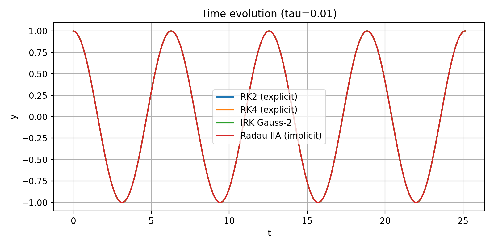
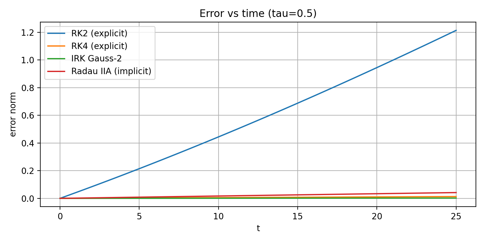

Exercise 19.4#
Comparison of RK2, RK4, Gauss–Legendre (s=2), and Radau IIA (s=2)
Overall Process#
Implementation of a generic ExplicitRungeKutta time-stepper
CreatedExplicitRungeKuttaclass inexplicitRK.hppthat takes an arbitrary Butcher tableau. ((A,b,c)) with strictly lower triangular (A) (explicit RK).Definition of specific Butcher tableaus
Added setup routines for
RK2 (Heun)
RK4 (classical 4th-order)
Gauss–Legendre IRK (s=2)
Radau IIA IRK (s=2)
Comparison driver ① Implemented
Rk_compare.cppusing the ASC-ODE framework and the above time-steppers.
② For each method and each τ, we solve the mass–spring system on \([0,8\pi]\) and write CSV files
ex19_4_rk2.csvex19_4_rk4.csvex19_4_irk_gauss2.csv``ex19_4_radau2a.csvPostprocessing / plotting
plot_RK_methods.py: time evolution and phase plots for each τ.plot_RK_errors.py: error vs time, using the exact solution (y(t)=\cos t), (v(t)=-\sin t).
Plots#
Below we summarize the key graphical outputs (only representative examples are shown; full set available in the repository).
Plot 1 — Time Evolution (τ = 0.01)#
All four methods overlap almost perfectly.
Small step size ⇒ high accuracy for all methods; the oscillation keeps correct amplitude and phase.
#
Plot 2 — Time Evolution (τ = 0.5)#
Differences become visible:
RK2 starts to lose phase accuracy and amplitude.
RK4 performs better, but a small phase drift appears.
Gauss–Legendre and Radau IIA remain stable and stay close to the true oscillation.

Plot 3 — Time Evolution (τ = 2.0)#
RK2 becomes completely unstable and diverges.
RK4 already shows strong distortion.
Radau IIA heavily damps the oscillation (L-stable behavior).
Gauss–Legendre remains bounded but with reduced accuracy due to the very large τ.

Plot 4 — Phase Portraits (τ = 0.01)#
All methods produce nearly perfect circular phase trajectories.
This corresponds to almost energy-conserving behavior at small τ.
 #
#
Plot 5 — Phase Portraits (τ = 0.5)#
RK2 spirals outward ⇒ artificial energy gain.
RK4, Gauss–2, and Radau IIA stay close to the exact circle; trajectories remain bounded.
Plot 6 — Phase Portraits (τ = 2.0)#
RK2 spirals dramatically outward (complete loss of stability).
RK4 still oscillatory but clearly distorted.
Gauss–Legendre stays bounded.
Radau IIA spirals inward due to numerical damping (L-stability).
Plot 7 — Error vs Time#
For each τ, the error is computed as
$\(
\text{err}(t) = \big\|\,(y_{\text{num}}(t),v_{\text{num}}(t)) - (\cos t,-\sin t)\,\big\|.
\)$
τ = 0.01 and τ = 0.1
RK2: small but steadily growing error.
RK4, Gauss–2, Radau IIA: extremely small errors; curves almost coincide.


τ = 0.5
RK2: error of order O(1) over the time interval.
RK4: mild growth, still acceptable.
Gauss–2 and Radau IIA: error stays very small and almost bounded.

τ = 1.0 and τ = 2.0
RK2: error grows catastrophically (instability).
RK4: significant drift but still bounded.
Gauss–Legendre: stable with moderate error.
Radau IIA: best stability; error remains small even for τ = 2.0.

Conclusions#
ExplicitRungeKutta implementation
The generic
ExplicitRungeKuttatime-stepper successfully handles arbitrary explicit Butcher tableaus with a lower triangular (A).RK2 and RK4 are obtained only by providing their coefficients, confirming that the implementation is method-agnostic and reusable.
RK2 (Explicit Heun)
Second-order accuracy; works well only for small τ.
For τ ≥ 0.5, strong phase and amplitude errors accumulate.
For τ ≥ 1.0, RK2 becomes numerically unstable for the oscillatory system.
RK4 (Classical Explicit)
Much better long-time accuracy than RK2.
Still not A-stable: for very large τ, phase errors become dominant.
Reasonable choice for moderate τ when an explicit scheme is required.
Gauss–Legendre IRK (s=2)
A-stable and symplectic.
Preserves the qualitative structure of the oscillation very well, even for larger τ.
Error remains bounded for all tested step sizes; phase plots stay close to a circle.
Radau IIA IRK (s=2)
L-stable implicit method: damps high-frequency / stiff components.
Extremely robust for large τ; the solution does not blow up.
Shows numerical damping on this pure oscillatory problem, but has the best stability among all tested methods.